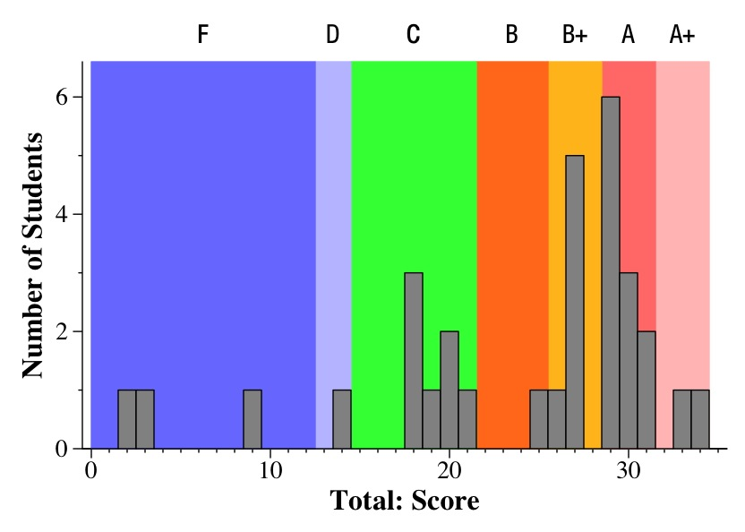

The ranges of grades are below. If you are in the B and above group, you're doing fine, although if you received a B or B+, you do need to strengthen some areas of your understanding. If you are in the C cluster, you really need to spend some extra time coding. Clearly the in-class labs and homeworks are not giving you what you need, and my guess is that you're not getting 100's on the homeworks -- my advice is to spend the extra time to do so -- you need to have C code flowing from your fingertips!
If you are below the C range, you are in trouble, and my advice is to drop the course, spend some time practicing your coding, and retake the class. I know no one wants to do so, since it costs you time and either you or your parents money. However, this is fundamental material, and you need to understand it thoroughly and not vaguely.

In the "answers and grading", there are histograms of scores for each question.